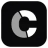
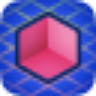
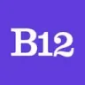

Pix2PixГенерация изображений
«Pix2Pix» представлен в разделе «Генерация изображений». При выборе проверьте нужную операцию и условия работы с результатом.
No-code и Low-code платформы: Опишите данные, роли пользователей и действия. Сравните экспорт, интеграции и возможность изменить проект после генерации.
Составьте спецификацию приложения учёта заявок перед работой в конструкторе. Молекула поможет подготовить описание экранов и пример логики; сборка в выбранной no-code платформе, настройка доступа и публикация приложения остаются отдельными действиями.
Подготовь спецификацию приложения заявок для небольшой мастерской. Есть клиент, менеджер и исполнитель. Опиши поля, статусы, доступ каждой роли и действия на экранах без привязки к платформе.

«Pix2Pix» представлен в разделе «Генерация изображений». При выборе проверьте нужную операцию и условия работы с результатом.
Razzle позволяет описывать действия на обычном языке и рассматривается для программных рабочих процессов. Исходные сведения упоминают работу с Node.js, Java и Python. Перед подключением определите допустимые операции и проверку аргументов: понятный запрос пользователя не подтверждает, что он имеет право выполнить действие с конкретными данными.
В инструменте «Sitekick AI» можно создавать основу сайта или приложения. Ещё одно направление работы: готовить материалы о товарах и услугах.
«SmartBot (borisbot.com)» помогает организовать разговор с чат-ботом.
Сравнивать «Unify» с другими инструментами раздела «ИИ-ассистент» удобнее на одинаковом исходном материале.
«Vivid» помогает готовить изменения программного кода.
Сравнивать «Wand AI» с другими инструментами раздела «Разработка» удобнее на одинаковом исходном материале.

В инструменте «Builder.io» можно создавать основу сайта или приложения. Ещё одно направление работы: собирать рабочие инструменты и операции с данными.

Chatbase помогает создать агента, который отвечает по материалам организации. Помимо текстов базы знаний важно определить границы допустимых ответов и действий.
Droxy помогает создавать чат-ботов без написания кода, используя загруженный контент разных источников. Материалы образуют базу знаний помощника. Пользователь может менять внешний вид и подключать бота к платформам, включая Discord, связывая выбранное содержание и нужную среду общения участников.

Lutra AI используют, чтобы писать и изменять программный код. Ещё одно направление работы: готовить ответы на обращения клиентов.

Rocket.new используют, чтобы создавать основу сайта или приложения. Ещё одно направление работы: собирать рабочие инструменты и операции с данными.

Сравнивать «Rooms» с другими инструментами раздела «Конструкторы сайтов и лендингов» удобнее на одинаковом исходном материале.
«Stunning.so» помогает собрать сайт или веб-приложение.
«White Label ChatGPT» помогает организовать разговор с чат-ботом.
Xero позволяет работать с ИИ через интерфейс на естественном языке. Платформа предоставляет преобразование данных и операции обучения моделей, а также их тестирование. Пользователь связывает эти средства при подготовке собственного сценария машинного обучения и рассмотрении результатов в рамках выбранной задачи.
Aimylogic позволяет собирать чат-ботов и голосовые процессы в визуальном конструкторе. Российская платформа Just AI поддерживает распознавание естественной речи и обучение на намерениях пользователя. Доступны сценарии обзвона и IVR, а для внешних систем предусмотрены API и вебхуки.
«AppsMakerStore» представлен в разделе «No-code и Low-code платформы». При выборе проверьте нужную операцию и условия работы с результатом.
Сравнивать «Diagram» с другими инструментами раздела «Дизайн» удобнее на одинаковом исходном материале.
Levity собирает ИИ-автоматизации без написания программного кода. В наборе предусмотрены работа с электронной почтой, учёт запасов, классификация документов и обработка обращений поддержки. Платформа ориентирована на повторяющиеся операции компании, где поступающий материал нужно распределять или обрабатывать по выбранному сценарию вместо отдельного ручного действия для каждого случая.
Для «MakeForms AI Form Builder» сначала определите свою задачу и требуемый результат. Карточка относится к направлению «No-code и Low-code платформы».
«Mobirise AI Website Generator» помогает собрать сайт или веб-приложение.
Сравнивать «Prisms AI» с другими инструментами раздела «Разработка» удобнее на одинаковом исходном материале.
Сравнивать «SheetAI» с другими инструментами раздела «Продуктивность» удобнее на одинаковом исходном материале.
Showspace создаёт персональную страницу портфолио с помощью языковой модели. Пользователь представляет свои проекты и достижения в формате сайта. Продукт также поддерживает просмотр и отслеживание работы, чтобы автор и потенциальный работодатель могли обращаться к подготовленным материалам профессионального представления.
Для «Voxil» сначала определите свою задачу и требуемый результат. Карточка относится к направлению «No-code и Low-code платформы».
«Bodt» помогает организовать разговор с чат-ботом.
«Chat-fu» помогает организовать разговор с чат-ботом.
«Craftum» готовит визуальные материалы по заданию. «Craftum» также помогает собрать сайт или веб-приложение.
Для «Fliplet» сначала определите свою задачу и требуемый результат. Карточка относится к направлению «Разработка».
Сравнивать «Godmode» с другими инструментами раздела «ИИ-ассистент» удобнее на одинаковом исходном материале.
Для «I18ncore» сначала определите свою задачу и требуемый результат. Карточка относится к направлению «Переводы».
Kinetix относится к инструментам, которые помогают готовить трёхмерный объект для проекта. Ещё одно направление работы: собирать видеосцену по описанию или визуальному исходнику.
«MarsX» представлен в разделе «Разработка». При выборе проверьте нужную операцию и условия работы с результатом.
Obviously AI помогает создавать прогнозные модели без самостоятельного программирования, а затем развёртывать их, отслеживать работу и подключать к другим процессам. Для оценки выберите задачу с известным исходом и понятным моментом прогноза. Проверьте качество исходных данных и не передавайте модели сведения, появляющиеся только после прогнозируемого события.
«Semiform» представлен в разделе «ИИ-ассистент». При выборе проверьте нужную операцию и условия работы с результатом.
«Sola Solutions» помогает соединить повторяемые рабочие действия.
В инструменте «Taskade» можно писать и изменять программный код. Ещё одно направление работы: собирать рабочие инструменты и операции с данными.
Vert помогает создавать сайты без написания кода и объединяет это с рабочими задачами бизнеса. Предусмотрены адаптивное оформление, генерация содержимого средствами ИИ, работа с потенциальными клиентами и отслеживание продаж. В той же платформе можно организовывать задачи, связанные с развитием отношений с клиентами.
«VisQ» представлен в разделе «Разработка». При выборе проверьте нужную операцию и условия работы с результатом.
«Wizlink AI» представлен в разделе «Конструкторы сайтов и лендингов». При выборе проверьте нужную операцию и условия работы с результатом.
«Woodle» помогает собрать сайт или веб-приложение.

10Web соединяет создание сайта на WordPress с его дальнейшим размещением и настройкой. Описание проекта используется для подготовки основы, которую затем нужно наполнить и проверить.

Argil AI помогает собирать процессы с участием ИИ без написания программного кода. Предусмотрены шаблоны для разных задач и настройка под пользователя. Через API можно связывать работу с другими инструментами, дополняя выбранный сценарий доступными средствами персонализации продукта.

B12 ориентирован на подготовку сайта компании и его содержания. После создания основы остаётся проверить страницы, формы и то, как посетитель находит нужную услугу.
Chainfuse добавляет ИИ-помощь в сообщество Discord без написания кода. Инструмент отвечает на вопросы участников и собирает предложения новых функций. Такая работа объединяет повседневные обращения сообщества и запросы к развитию продукта, позволяя рассматривать их в общем процессе взаимодействия с пользователями.
Для «Evoke» сначала определите свою задачу и требуемый результат. Карточка относится к направлению «Разработка».
Для «Flojoy Studio» сначала определите свою задачу и требуемый результат. Карточка относится к направлению «Разработка».
Страница 3 из 4